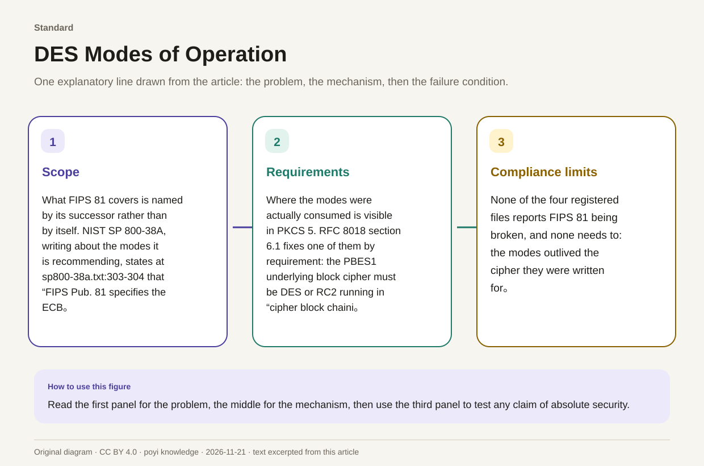
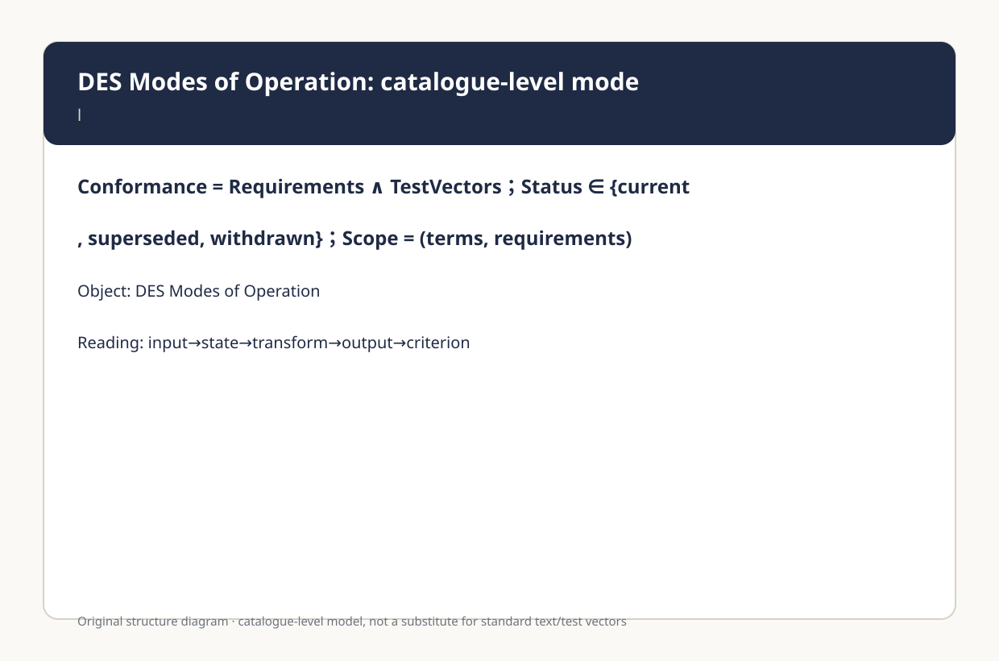

Principles
Standard: DES Modes of Operation (DES 工作模式). What FIPS 81 covers is named by its successor rather than by itself. NIST SP 800-38A, writing about the modes it is recommending, states at sp800-38a.txt:303-304 that “FIPS Pub. 81 [4] specifies the ECB, CBC, CFB, and OFB modes of the Data Encryption Standard (DES).” - so the object of this standard is four ways of running the DES block cipher, not a new cipher. The general shape of such a mode is given at line 478: “A confidentiality mode of operation of the block cipher algorithm consists of two processes that are inverses of each other: encryption and decryption.” A mode therefore sits between the cipher and the message: the cipher itself stays a single-block function, and the mode decides how it is applied repeatedly. Two of the four definitions survive as running prose. ECB at line 561: “The Electronic Codebook (ECB) mode is a confidentiality mode that features, for a given key, the assignment of a fixed ciphertext block to each plaintext block, analogous to the assignment of code words in a codebook.” CFB at line 675: “The Cipher Feedback (CFB) mode is a confidentiality mode that features the feedback of successive ciphertext segments into the input blocks of the forward cipher to generate output blocks that are exclusive-ORed with the plaintext to produce the ciphertext, and vice versa.” CBC, defined at lines 602-603 in terms of chaining plaintext blocks with previous ciphertext blocks, and OFB, defined at lines 779-783 as iterating the forward cipher on an initial value, are stated here in own words. The reason is a defect of the retained text: the formal blocks at lines 609-616 and 688-701 print the exclusive-OR operator as a blank and misplace the CBC decryption line, so the arithmetic is described rather than quoted. Line 504 adds the input rule the block modes share: “For the ECB and CBC modes, the total number of bits in the plaintext must be a multiple of the block size, b” - a length condition the segment and stream-like modes do not impose in the same way (lines 509-519).

Why it matters
RFC 4949 gives the reason the family exists at all. Its entry $ mode of operation, sense 1 for /cryptographic operation/ (rfc4949.txt:10820-10825), defines the concept as “A technique for enhancing the effect of a cryptographic algorithm or adapting the algorithm for an application, such as applying a block cipher to a sequence of data blocks or a data stream.” That is a design statement, not a history note: a mode buys two things, extra effect and adaptability, and the four FIPS 81 modes are four different trades between them. The glossary then keeps the provenance visible. Its definitions of “cipher block chaining (CBC)”, “cipher feedback (CFB)”, “electronic codebook (ECB)” and “output feedback (OFB)” each close with the source tag [FP081] - rfc4949.txt:3395, 3406, 6450 and 11839 - while the definition of “counter mode (CTR)” closes with [SP38A] at rfc4949.txt:4546. The two tags in one reference list are the cleanest statement in this corpus of where the FIPS 81 family ends and the later work begins: chaining and feedback over DES blocks are credited to the 1980 document, the counter mode to the 2001 one. What each of the four does is also stated there in short form: ECB applies the algorithm directly to a plaintext block and uses the result directly as cipher text (line 6448-6450), CBC enhances ECB by chaining the ciphertext blocks it produces (line 3394-3395), CFB additionally operates on plaintext segments of variable length up to the block length (line 3403-3406), and OFB modifies ECB to operate on such segments (line 11837-11839). Those clauses are cited by line and paraphrased here, because the definition sentences run over indented lines and the quotation form used above is reserved for runs the file prints cleanly.
Applications
Where the modes were actually consumed is visible in PKCS #5. RFC 8018 section 6.1 fixes one of them by requirement: the PBES1 underlying block cipher must be DES or RC2 running in “cipher block chaining (CBC) mode [NIST81]” (rfc8018.txt:700-702). That is CBC from FIPS 81 being made mandatory inside a password-based encryption scheme, and the same document's appendix names the construction directly, “DES-CBC-Pad is single-key DES [NIST46] in CBC mode [NIST81]” with padding (rfc8018.txt:1633-1634). Appendix B.2 then records the turn: of the schemes inherited from PKCS #5 v2.0, “legacy and should only be used for backwards compatibility reasons.” (rfc8018.txt:1617-1618), while AES-CBC-Pad is offered as the PBES2 example (line 1614) - the chaining mode survives, the DES key under it does not. The reason is stated one section earlier and is about key length rather than about the mode: “each of which has a key size (56 or 64 bits) that may not be large enough for some applications.” (rfc8018.txt:707-708). The same file also shows how FIPS 81 is cited in current documents, at rfc8018.txt:1096, where the reference entry closes with “FIPS PUB 81, December 2, 1980.” - a complete date, written in a different word order from the one RFC 4949 uses at its line 19454.

Limits & attacks
None of the four registered files reports FIPS 81 being broken, and none needs to: the modes outlived the cipher they were written for, and the failure mode that survives into later designs is a property of the chaining-and-padding combination. RFC 3711, the SRTP specification, states it as a general warning at rfc3711.txt:2363-2366: “Some cipher modes of operation that require padding, e.g., standard cipher block chaining (CBC) are very sensitive to attacks on confidentiality if certain padding types are used in the absence of integrity.” The following sentences narrow it to a case, “used together with CBC mode.” and then impose the obligation on future work, “proper integrity protection.” (lines 2368-2370). The attack it names is resolved in the document's own reference list at lines 2769-2771 as “Security Flaws Induced by CBC Padding” - “Application to SSL, IPsec, WTLS...”, in Advances in Cryptology, EUROCRYPT'02, LNCS 2332, pages 534-545; the venue, series and page numbers are all printed on those three lines and are not restated from memory. Two limits of the FIPS 81 family are worth separating from that: the padding requirement, since ECB, CBC and CFB demand a whole number of blocks or segments and the extra bits have to be added before encryption (SP 800-38A Appendix A, sp800-38a.txt:946-955), and the malleability that Appendix D makes explicit for CBC, Consequently, for the CBC mode, the decryption of the first ciphertext block is vulnerable to the (deliberate) introduction of bit errors in specific bit positions of the IV if the integrity of the IV is not protected. (sp800-38a.txt:1140-1142). Neither is a break of the mode algebra; both are consequences of running a confidentiality-only mode without integrity. It is also visible in the same source that the family was not frozen in 1980: SRTP's f8 transform is described at rfc3711.txt:1197-1198 as a variant of “Output Feedback Mode (OFB) [HAC]”, with a more elaborate initialization and feedback function, i.e. an OFB descendant chosen for a use FIPS 81 never contemplated.
History
The dates this row can support are the ones its sources print. SP 800-38A's reference list carries the entry as “DES Modes of Operation.” “U.S. DoC/NIST, December 1980.” (sp800-38a.txt:6839), a month-only date, while RFC 8018 at line 1096 and RFC 4949 at line 19454 print a full day for the same publication; this entry records the difference instead of merging the three into one cleaned date. The relation between the two documents is stated at sp800-38a.txt:312-315, where the newer publication lists “the extension of the four confidentiality modes in FIPS Pub 81 for use with any FIPS-approved block cipher” as its first new element, “the revision of the requirements for these modes” as its second, and “the specification of an additional confidentiality mode, the CTR mode, for use with any FIPS-approved block cipher” as its third (the whole run is on lines 313-315). Read plainly, SP 800-38A extends and revises the four FIPS 81 modes and adds a fifth; it does not describe itself as abolishing them. Its status sentences go the other way as well: “This recommendation is neither a standard nor a guideline, and as such, is neither mandatory nor binding on Federal agencies.” (lines 277-278), and “Nothing in this recommendation should be taken to contradict standards and guidelines that have been made mandatory and binding upon Federal agencies by the Secretary of Commerce under his statutory authority.” (lines 281-283). As to the question of whether FIPS 81 has been withdrawn or replaced: the four retained files registered for this row were grepped for withdraw, annular and rescind, and the words do not occur in any of them, so no withdrawal and no replacement is asserted here. For comparison, the reference annex of RFC 4949 does know the annotation form - it prints Superseded by [DoD9]. at rfc4949.txt:19385 - but that note belongs to the [DoD7] entry, a Department of Defense X.509 certificate policy, and the [FP081] entry at line 19454 carries no status note at all. What the retained evidence does establish is supersession in substance rather than in wording: SP 800-38A is written for any FIPS-approved block cipher, the AES among them (lines 295-298), and the mode family outlived the algorithm it was named after.
Worked example & verification
Formal model and reproduction steps
[S=\min_i S_i,\quad S_i\in{\text{密钥强度},\text{分组安全},\text{实现安全}}]
DES Modes of Operation: the registered public parameters, key material or randomness, and message are mapped through the stated transformation to an output checked against the registered criterion. The worked example is a structural reproduction, not a new test vector; parameter ranges, standard versions and implementation details remain source-bound.
References
- Wikipedia search entry for DES 工作模式. https://zh.wikipedia.org/w/index.php?search=DES%20%E5%B7%A5%E4%BD%9C%E6%A8%A1%E5%BC%8F
- Handbook of Applied Cryptography (Menezes, van Oorschot, Vanstone). https://www.cacr.math.uwaterloo.ca/hac/